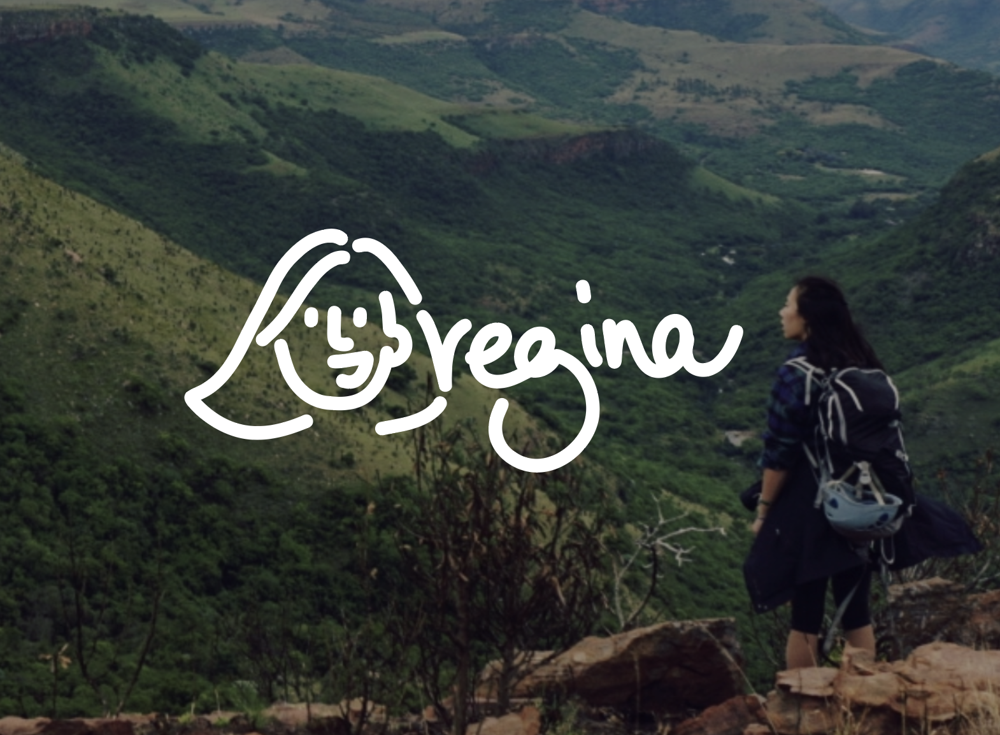
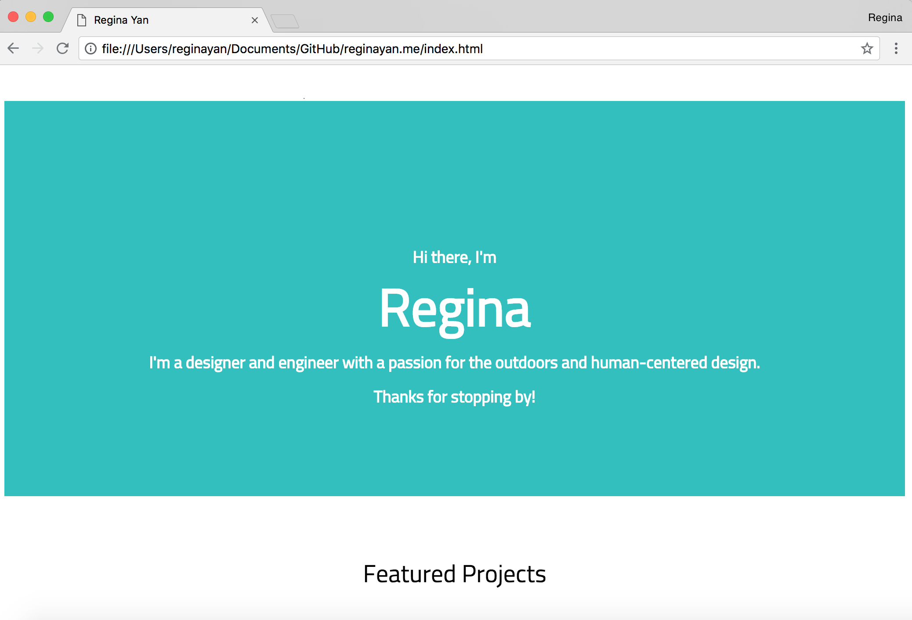
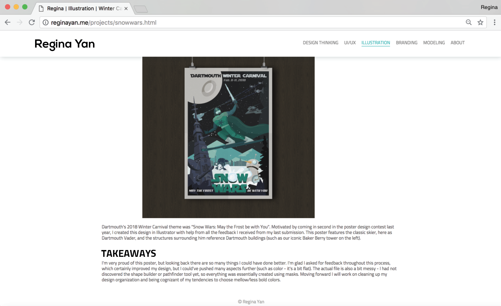
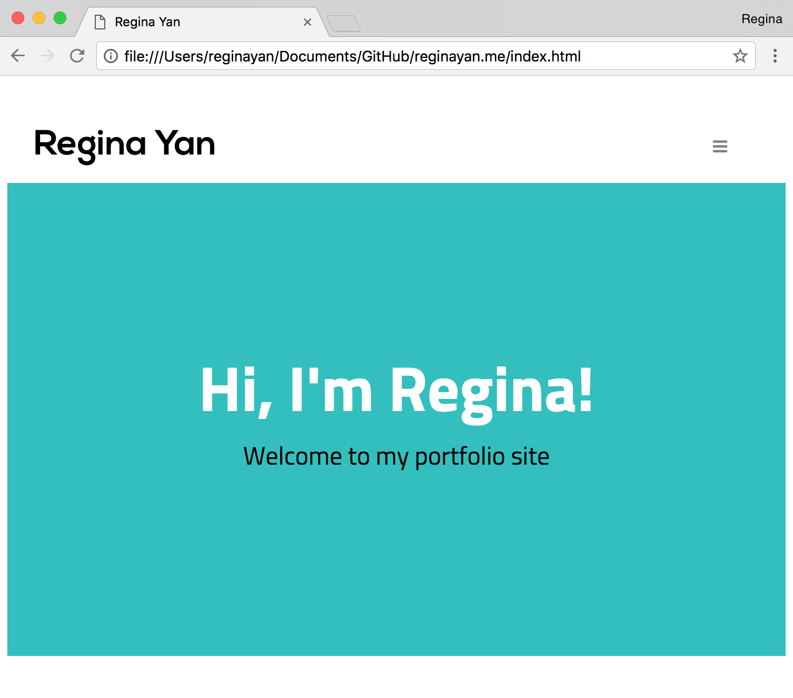
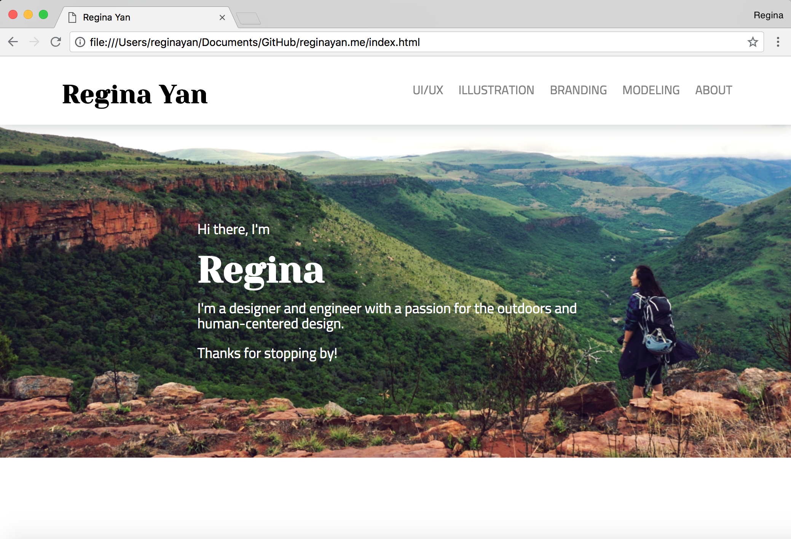

Personal Website
I think the best way to learn software is to have a project in mind. So, to learn HTML/CSS & Javascript, I built my own portfolio site!
This has been a fun, on-going project with benefits beyond creating a space for my work and reflection. I've found that, as a UI/UX designer working with front-end developers, it's so important to understand the engineering side so that I can 1. be more mindful of their process when I'm creating designs and 2. better communicate my ideas to them.

Version 1: Basic Site
Skills were low and the urgency to have a portfolio for job applications was high. In this bare-bones version, I learned the basics of HTML/CSS and navigating GitHub and placed a selection of work on a single landing page.

Version 2: Adding Projects (MVP!)
In the second iteration, I added all my project images/documentation and focused on styling. I started incorporating Javascript with components like the nav bar.

Version 3: Responsiveness
I then focused on responsiveness by learning how to use media queries -- goodbye crammed nav bar items, hello hamburger menu!

Version 4: Styling Update
With helpful input from friends ("no one wants to see a plain blue screen when they land on your site!"), I added a hero image and changed up the fonts for better style and readability.

Version 5: UX Improvements
I showed my website to as many people as I could and made improvements based on their feedback. One update I made was the addition of a "More Projects" section at the bottom of each project page -- before, you had to scroll to the top of a page and click back to the main section page in order to navigate to another project. With the "More Projects" section, there's now forward flow!
... and that brings us to today! I'm in the process of design restyling and code restructuring... stay tuned for a site upgrade soon :D
Previous Project
Full-Stack Web-Dev